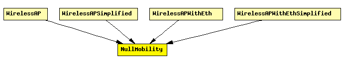

File: Mobility/NullMobility.ned
C++ definition: click here
This mobility module does nothing; it can be used for stationary nodes.
Author: Andras Varga
The following diagram shows usage relationships between modules, networks and channels. Unresolved module (and channel) types are missing from the diagram. Click here to see the full picture.
If a module type shows up more than once, that means it has been defined in more than one NED file.
| WirelessAP | Models a 802.11 Access Point. It can be used in conjunction with WirelessHost, or any other host model containing WirelessNicSTA. |
| WirelessAPSimplified | Models a 802.11 Access Point, but using a simplified NIC that does not support handovers. It should be used in conjunction with WirelessHostSimplified, or any other host model containing WirelessNicSTASimplified. |
| WirelessAPWithEth | Models a 802.11 Access Point with Ethernet ports. It can be used in conjunction with WirelessHost, or any other host model containing WirelessNicSTA. |
| WirelessAPWithEthSimplified | Models a 802.11 Access Point with Ethernet ports, but using a simplified NIC that does not support handovers. It can be used in conjunction with WirelessHostSimplified, or any other host model containing WirelessNicSTASimplified. |
| Name | Type | Description |
|---|---|---|
| x | numeric const | start x coordinate (-1 = display string position, or random if it's missing) |
| y | numeric const | start y coordinate (-1 = display string position, or random if it's missing) |
simple NullMobility parameters: x: numeric const, // start x coordinate (-1 = display string position, or random if it's missing) y: numeric const; // start y coordinate (-1 = display string position, or random if it's missing) endsimple